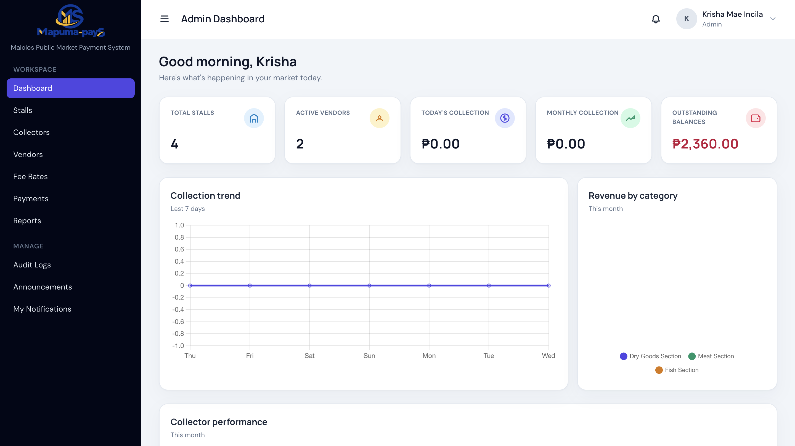
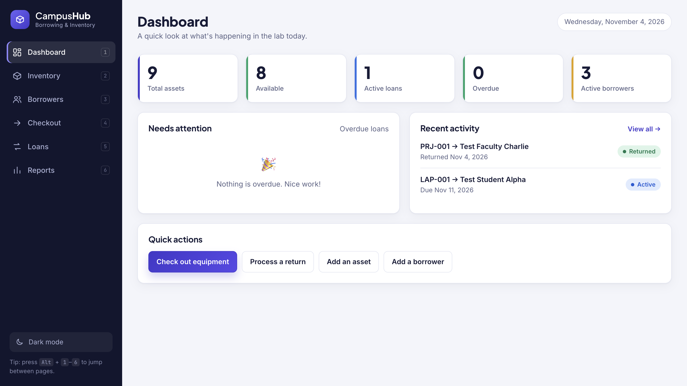
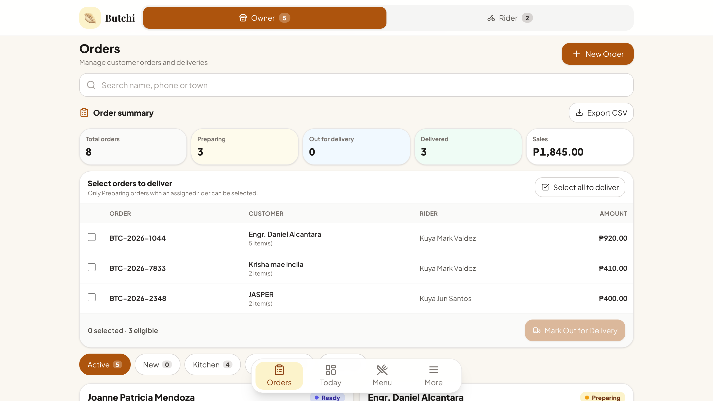

Front-End & Core Web
- HTML5
- CSS3
- JavaScript
- Tailwind CSS
- Typescript
- ReactJS
- Blade
- Responsive Design
Available for OJT · 2nd Sem A.Y. 2026–2027
Specialized in PHP, Laravel, MySQL and responsive web development, with hands-on experience building database-driven systems.
Krisha Mae L. Incila
About Me
I am a Computer Technology student who builds complete web systems, from database design and CRUD features to user interfaces and technical documentation. My thesis, a digital fee collection system with offline support, taught me to deliver working solutions for real users. I aim to contribute to a partner company's software and web development team while growing in a professional environment.
Relational design and CRUD implementation with MySQL.
Laravel, PHP and Tailwind CSS for complete web systems.
Flowcharts, database designs, prototypes and test materials.
Version control basics with Git/GitHub on group projects.
Technical Skills
Featured Work

A digital ticketing and fee collection system for the Public Market of Malolos, Bulacan, built to improve recording and monitoring of market fees. It includes Admin, Collector and Vendor portals, QR/barcode vendor identification, ticket printing on an Android POS with thermal printer, and an offline workflow that syncs once the connection returns.

CampusHub solves the problem of disorganized school equipment records and inefficient borrowing processes caused by manual tracking through notebooks or spreadsheets. It is a desktop-based inventory management system that allows authorized staff to manage assets, monitor availability, record checkouts and returns, and track overdue loans.

Butchi Order Management is a web-based system for personal business use that helps manage customer orders, monitor preparation and delivery statuses, assign riders, and track completed deliveries. It simplifies daily order management and keeps business transactions organized and efficient.
Contact & Internship Inquiries
I'm open to HR leads and industry partners looking for a motivated software and web development intern. Send me a message and I'll respond as soon as possible.
Email Me Directly